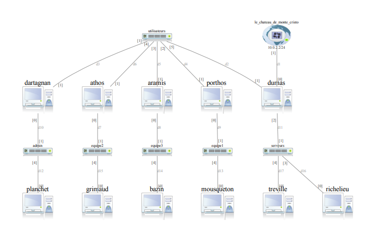
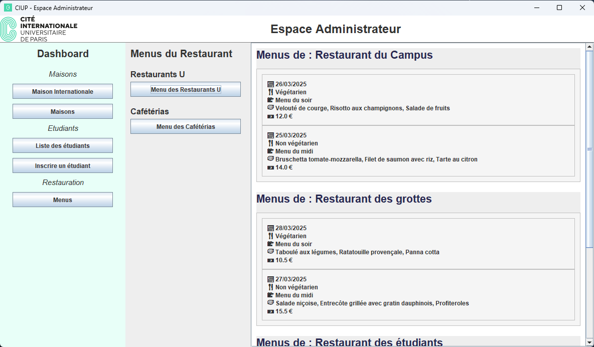
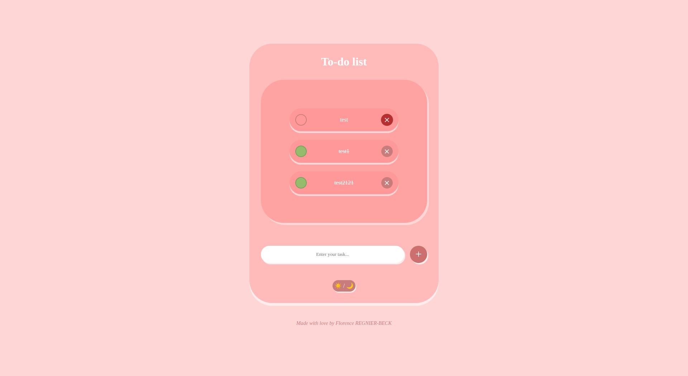
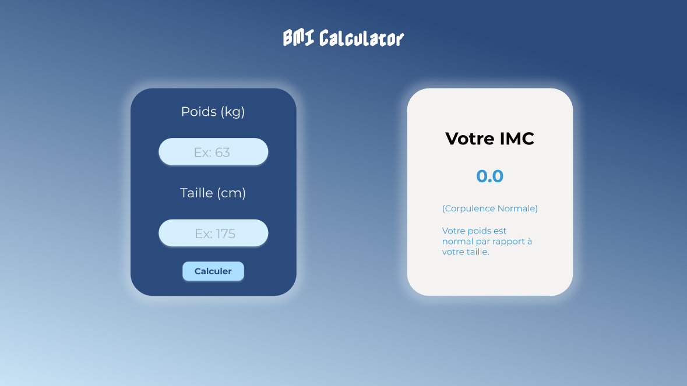
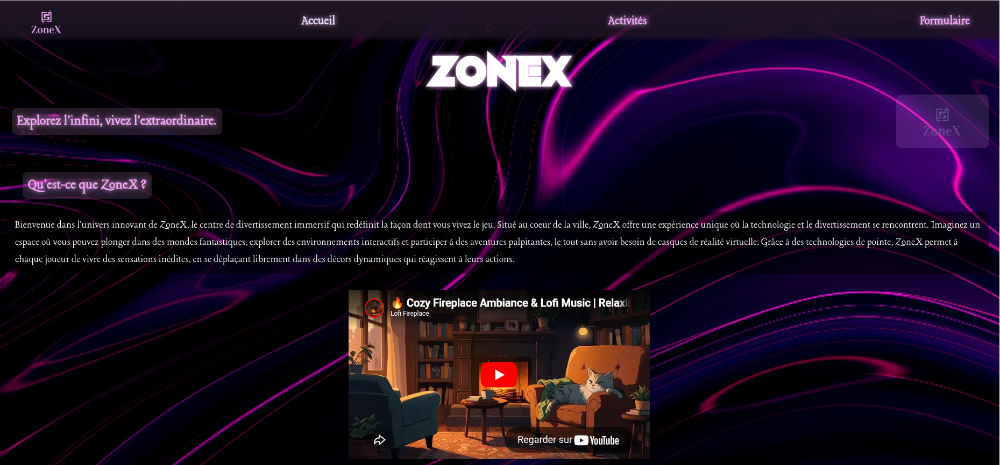

Étudiante en DUT Informatique, future ingénieure DevSecOps. Je me forme chaque jour pour apprendre et me surpasser.
01 — À propos
Je suis étudiante en DUT Informatique à l'IUT d'Orsay, avec l'ambition de devenir ingénieure DevSecOps. Passionnée par la cybersécurité et les nouvelles technologies, je m'efforce chaque jour d'apprendre quelque chose de nouveau, que ce soit sur la sécurisation des systèmes ou l'automatisation.
J'explore actuellement React, Next.js et Docker pour élargir mes compétences, et je construis au fil du temps une base solide en développement. Rigoureuse, curieuse et autonome — j'apprends vite et j'aime aller au fond des choses.
02 — Expérience professionnelle
Groupe AVRIL · Paris
Au sein du groupe AVRIL, j'ai contribué au développement back-end d'une application interne en utilisant le framework Symfony avec Doctrine ORM et le langage PHP. J'ai travaillé en environnement DDEV et utilisé DBeaver pour la gestion de base de données. Ce stage m'a permis de découvrir un environnement professionnel agile, avec une gestion rigoureuse des branches sur Azure DevOps — revue de code, résolution de conflits, suivi des tâches.
Juin. 2025 — Août 2025
03 — Travaux

01Réseau · Sécurité · Linux
Configuration complète d'une infrastructure réseau : adressage IP, DHCP, DNS, routage. Analyse du trafic avec Wireshark pour comprendre les échanges entre machines et diagnostiquer des problèmes réseau en conditions réelles.

02Java · Swing · MVC
Application desktop de gestion des étudiants, chambres et menus de la Cité Internationale Universitaire de Paris. Développée en équipe de 4 en suivant le patron MVC, avec maquettage sur Figma en amont et gestion de branches sur GitLab.

03HTML · CSS · JavaScript
Application web de gestion de tâches, épurée et responsive. Ajout, suppression, marquage comme fait.

04HTML · CSS · JavaScript
Application web qui calcule l'Indice de Masse Corporelle à partir du poids et de la taille. Affichage du résultat avec sa catégorie (insuffisance, normal, surpoids…) et interface conçue à partir d'une maquette Figma.

05HTML · CSS · Travail d'équipe
Création de la page d'accueil de "ZoneX", une entreprise fictive proposant des jeux interactifs sans casque VR. Réalisé en équipe de 3.
Je travaille sur le prochain projet.